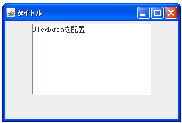
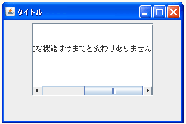

- Home ›
- Swing ›
- JScrollPaneクラス
JViewportクラスの定義とコンストラクタ
今までスクロールペインにコンテンツを配置していたのは、スクロールペインを構成する複数の部品の中のビューポートの箇所となります。単にコンポーネントをスクロールペインに配置するだけの場合はあまり意識しなくても構いませんが、ビューポートに対して細かい設定を行う場合にはJViewportクラスのオブジェクトとしてスクロールペインから取り出し設定を行うことができます。ここではJViewportクラスについて確認していきます。
JViewportクラスの定義を確認します。クラス図は次のようになっています。
- java.lang.Object
- java.awt.Component
- java.awt.Container
- javax.swing.JComponent
- javax.swing.JViewport
- public class JViewport extends JComponent implements Accessible
JViewportクラスはJComponentクラスのサブクラスとなっています。JComponentクラスはSwingで用いられる多くのコンポーネントのベースとなっているクラスです。
JViewportクラスのコンストラクタ
JViewportクラスをを利用するにはコンストラクタを使ってJViewportクラスのオブジェクトを作成するか、JScrollPaneクラスのオブジェクトから現在設定されているビューポートを取り出すかどちらかとなります。どのようなコンストラクタが用意されているか確認してみます。
| コンストラクタ |
|---|
| JViewport() JViewport を生成します。 |
用意されているコンストラクタは1つだけです。ではコンストラクタを確認してみましょう。
JViewport public JViewport()
JViewport を生成します。
このコンストラクタではJViewportクラスのオブジェクトを作成するだけのものです。
実際の使い方は次のようになります。
JViewport view = new JViewport();
作成したビューポートをスクロールペインに設定する
新しく作成したJViewportクラスのオブジェクトをスクロールペインに設定するにはJScrollPaneクラスで用意されている「setViewport」メソッドを使います。
setViewport public void setViewport(JViewport viewport)
以前のビューポートがある場合はそれを削除し、新しいビューポートのビュー
位置を +x、+y 四分区間内に設定し、行および列ヘッダー (存在する場合) と
新しいビューポートを同期させ、結果としてスクロールバーとヘッダーと新し
いビューポートを同期させます。
ほとんどのアプリケーションの場合、ビューポートとスクロール区画へのビュー
の追加には setViewportView を使ったほうが便利です。
パラメータ:
viewport - 使用される新しいビューポート。ビューポートが null の場合、
以前のビューポートは削除され、新しいビューポートが null に設定される
引数に新しいJViewportクラスのオブジェクトを指定します。以前に設定されていたビューポートは削除され新しいビューポートがスクロールペインに設定されます。
実際の使い方は次のようになります。
JScrollPane scrollpane = new JScrollPane(); JViewport view = new JViewport(); scrollpane.setViewport(view);
サンプルプログラム
では簡単なサンプルを作成して試してみます。
import javax.swing.*;
import java.awt.Dimension;
import java.awt.BorderLayout;
public class JScrollPaneTest6 extends JFrame{
public static void main(String[] args){
JScrollPaneTest6 frame = new JScrollPaneTest6();
frame.setDefaultCloseOperation(JFrame.EXIT_ON_CLOSE);
frame.setBounds(10, 10, 300, 200);
frame.setTitle("タイトル");
frame.setVisible(true);
}
JScrollPaneTest6(){
JScrollPane scrollpane = new JScrollPane();
scrollpane.setPreferredSize(new Dimension(200, 120));
JViewport view = new JViewport();
JTextArea textarea = new JTextArea("JTextAreaを配置");
view.setView(textarea);
scrollpane.setViewport(view);
JPanel panel = new JPanel();
panel.add(scrollpane);
getContentPane().add(panel, BorderLayout.CENTER);
}
}
上記をコンパイルした後で実行すると次のように表示されます。


新しいJViewportクラスのオブジェクトを作成し、コンポーネントを配置してあります。そして作成したJViewportクラスのオブジェクトをスクロールペインに設定しています。
( Written by Tatsuo Ikura )

著者 / TATSUO IKURA
初心者～中級者の方を対象としたプログラミング方法や開発環境の構築の解説を行うサイトの運営を行っています。